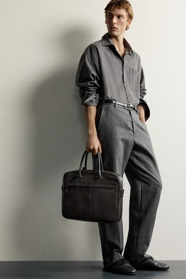
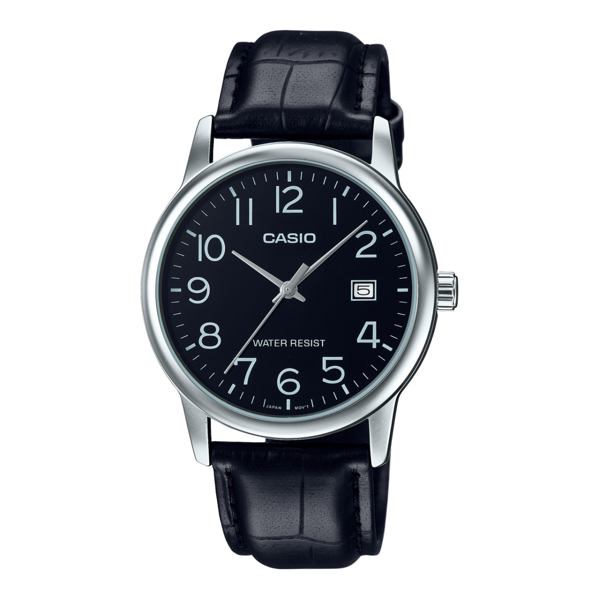
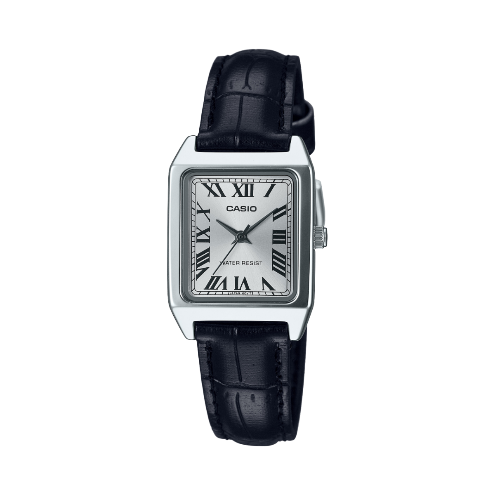
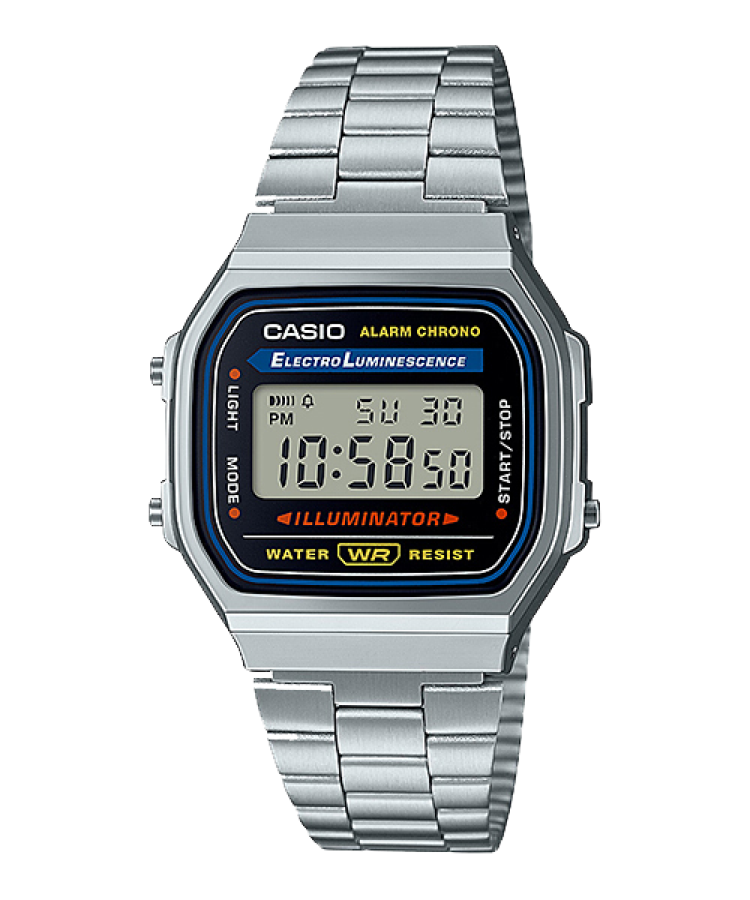
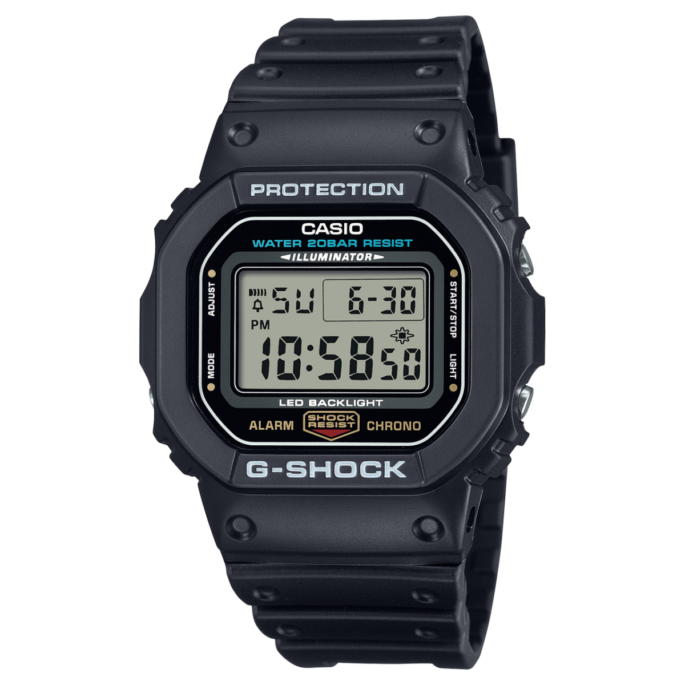
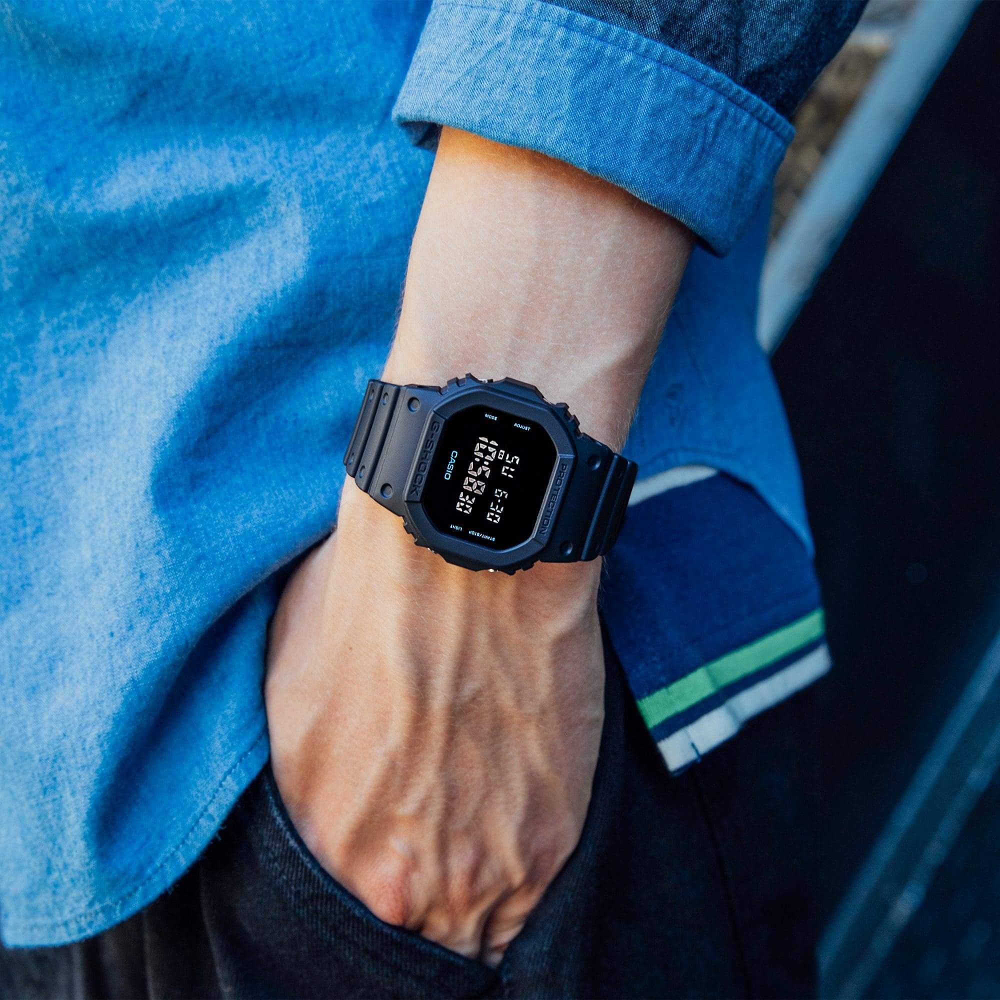
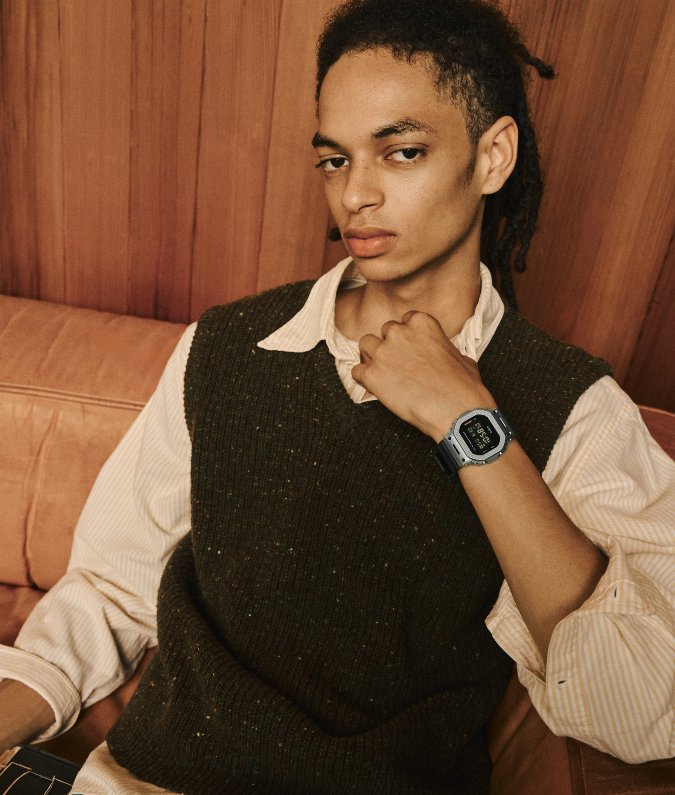
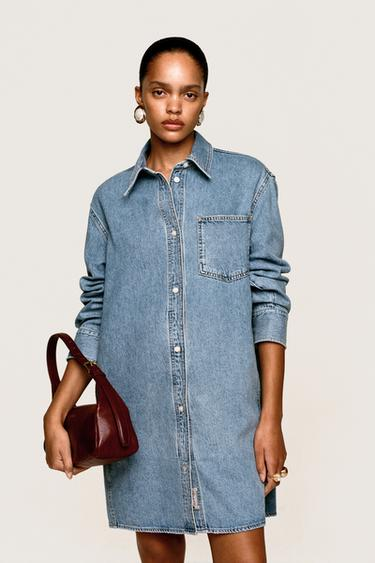

手表进入穿搭后，会在袖口末端增加一块形状：窄皮带与小表壳留下较集中的细节，宽金属链带把反光延伸到手腕，厚实的运动表则增加一段明显的体积。同一件衬衫或针织衫，搭配不同的表，手部给人的感觉便可能从整齐、克制转向复古或偏运动。
选表可以从三个关系入手：形状怎样落在手腕上，表面怎样回应衣料，袖口怎样给它留下空间。下文以三套ZARA造型为起点，配合腕表静物和卡西欧官方佩戴照片，比较同一件衣服换表后可能发生的变化。各图注明品牌归属，ZARA服装的换表比较为搭配设想。
先看袖口：灰色衬衫给手表留下了什么位置

图1：ZARA灰色衬衫、长裤与公文包造型，用于观察卷袖后的手腕空间。来源：官方页面。
这套造型的衬衫和长裤处在相近的灰色范围内，前襟、裤褶与包的边缘都比较清楚。袖子卷起，前臂露出，手腕附近没有明显堆积的衣料。即使先不加入手表，已经能够看见它可能出现的位置：衣袖末端与手部之间的一段空白。
如果希望保留这套衣服的整齐感，可以设想加入表面较简洁、体积不过分突出的腕表。它会在连续的灰色和露出的皮肤之间补一个细节。若换成厚表圈、宽表带，手腕上的体积增加，重点也会更向手部集中。先确定想让手表补充细节，还是成为主要装饰，会比直接寻找“百搭款”更有方向。
照片中的卷袖状态不能代表袖子放下后的表现。真正试戴时，还要把袖口放回日常位置：表能否滑入，手臂弯曲时是否被卡住，袖扣闭合后是否顶起一团。手表与衣服的配合，应同时观察露出时和被遮住时的状态。
这种方法也适用于西装。与其把表硬压在袖子外面持续展示，不如先确认它能随动作自然出现。如果衣袖或表带必须反复调整，眼前的造型关系往往还没有适应实际使用。
圆形皮带表：深色表盘、细边缘与连续的表带

图2：CASIO MTP-V002L-1B，圆形表壳、深色指针表盘与黑色皮表带。来源：官方页面。
这款表的圆形外缘比较清楚，浅色指针和数字从深色表盘中显现出来。表圈保留一圈反光，黑色皮表带继续连接表盘的暗色，但没有像金属链带那样将亮面延伸到整个手腕。观看重点因此比较集中。
它可以帮助理解“皮带表比较克制”这类判断的具体来源：在这张照片中，大部分区域是连续的深色，反光主要留在表壳和小配件上。不过，皮带并不天然低调。换成亮色、强烈纹理或高光表面，同样可能很醒目。
放回图1的灰色穿着，可以设想黑色表带与腰带、鞋和深色包产生联系。联系来自暗色分量的重复，不必要求每一件都使用同一种皮革、同一种纹理。手表的面积很小，也可以独立成为细节，而不必承担整套衣服的配色。
官方给出的表壳尺寸为长44、宽37、厚9.6毫米，表带为皮革。这里的“长44毫米”不是表盘直径，不能把它理解成一只44毫米圆表。看外观大小时，需要分清表盘、表壳和上下连接表带的结构，避免把不同尺寸混在一起。
窄矩形表：小面积为什么仍有明确的存在感

图3：CASIO LTP-V007L-7B1，矩形浅色表盘与黑色皮表带。来源：官方页面。
这款表以纵向矩形、浅色表盘和黑色罗马数字建立辨识度。黑色皮带从上下两端接出，与表盘形成清楚的明暗差别。浅色表盘像一块被深色边缘框住的小色面，即使面积不大，仍然容易被看见。
官方表壳尺寸为31 × 22 × 7.5毫米，明显不同于上一款。将它放在腕间，可以先想象一块较窄的浅色区域，周围由黑色表带连接。与同样小的圆表相比，矩形会留下另一种直线关系；与很大的圆表相比，它也可能更容易为手腕两侧保留空间。
但矩形不能只按横向宽度选择。表壳加上两端连接表带的部分，合起来的长度过大时，仍可能跨出手腕平面的边缘。手腕较窄的人，并不一定适合所有标为“小号”的款式；长、宽、厚和表带下弯方式都需要看。
窄矩形与宽松服装之间，可以形成“大轮廓、小细节”的关系。衣袖较宽、手腕两侧仍露出皮肤时，小表的边界会比较清楚；若被厚袖口压住，只露出一小截表带，这种形状关系就弱了。试戴时既要看表本身，也要看周围留下多少空间。男性或女性都可以据此选择尺度，不必先按性别排除某种表形。
金属链带：反光怎样从表盘扩展到整段手腕

图4：CASIO A168WA-1系列，银色外观、数字显示与不锈钢链带。来源：官方页面。
这款表把银色表壳外观与金属链带连在一起，亮面不只出现在表盘四周，也沿着链节延伸。链节的一道道接缝让手腕表面出现连续的明暗变化，表盘上的文字和彩色细线又增加了信息密度。
它与前两款皮带表的区别，不只是“一个金属、一个皮革”。皮带形成较长的连续色面，链带则由许多小片组成；同样一段距离，反光和纹理出现的频率不同。搭配棉布、针织或较少反光的上衣时，这些细节更容易被辨认。
这类表的复古工具感，可以从较紧凑的外壳、数字显示和面板上的按键文字共同理解；窄链节又保留了首饰般的反光。工具感和装饰性同时存在，因此它既能接近休闲服，也能为整齐衬衫带入一点复古意味。
还要分清外观与材料：官方列出的表带是不锈钢，表壳和表圈则为树脂加镀铬，并非整件都是不锈钢。商品照片里看起来相近的银色，不代表各部分具有相同材质；也不能由金属外观直接判断重量。
戴上之后：银色链带怎样进入绿色针织
图5：卡西欧官方佩戴案例：AQ-230A银色矩形表配绿色针织。来源：FUTURE CLASSIC vol3。
这张照片中，针织袖子推到前臂，腕表与袖口之间留出一段皮肤。银色链带没有紧挨着绿色罗纹，两种密集纹理因这段空白而分开，表壳的边界也更容易看清。它说明露腕的作用：既展示配饰，也让衣服和表之间有一段过渡。
绿色针织、内层格纹和背景花纹已经提供了较多颜色与纹理。腕表继续使用银色、浅色表盘和清楚的直边，在丰富环境中留下一处集中的细节。若再加一条宽而闪亮的手链，腕间的信息便会增加；是否需要这种变化，要回到整个人的形象判断。
图中的AQ-230A与前面的A168并非同款，显示方式和表壳也有差别。这里共同值得观察的是：链带让反光延伸到手腕，但它的分量可以通过窄表壳、露出的皮肤和卷袖位置得到安排。金属表可以进入柔软、色彩鲜明的日常穿着，而不必被限制在西装场合。
运动表：体积感与实际重量可以不同

图6：G-SHOCK DW-5600UE-1，黑色树脂表壳与树脂表带。来源：官方页面。
这款表的外缘更宽，屏幕周围包着一圈厚实结构，侧面按键、表带凹槽和文字各占据不同位置。黑色减少了大面积镜面反光，但并没有消除体积：靠形状的厚度和多层边缘，它仍能在手腕上形成鲜明的块面。
官方尺寸为48.9 × 42.8 × 13.4毫米，厚于前面几款。试配长袖时，尤其需要检查表壳侧面与袖口的关系。它不一定与所有衬衫都冲突，关键在袖口开口、布料余量和穿着方式；仅凭“运动表”三个字，无法决定它能不能进入一套衣服。
视觉分量也不等于实际重量。这款官方重量为52克，前面的A168为50克。两者在外观体积、反光和结构上有明显差别，重量却相近。觉得某只表“看着重”，与戴起来是否沉，是两个需要分别核对的问题。
把运动表放在宽松、表面有纹理的衣服旁，可以形成比较明确的结构对比；放在露腕的短袖旁，表壳又可能成为更突出的单独块面。想要低调，可以观察颜色和体积怎样融入；想要强调功能感，则可以让它成为清楚可见的重点。

图7：G-SHOCK官方佩戴案例：DW-5600UBB与蓝色卷袖，非上图DW-5600UE-1。来源：5600造型页。
佩戴近照把这种体积关系表现得更直接。蓝色衣袖卷起后形成一段厚边，黑色表壳停在下方，二者之间露出的皮肤把两块体积隔开。表盘、表圈和表带大部分都处在深色中，因此先看见完整的黑色块面，再看见屏幕数字。它的存在感主要来自宽度、厚度和外缘，不靠强烈闪光。
若把衣袖放到表的上缘，袖口与表壳便可能叠在同一位置，腕间看起来更集中；保留照片里的间距，则能清楚分出卷袖、前臂与腕表。先调整卷袖位置，再比较表壳大小，往往能更快找到问题。
同一件灰衬衫，三种表会把重点带向哪里
回到图1，先保持灰色衬衫、裤子和深色包不变，只比较腕表。这种设想的价值，是把“喜欢哪种气质”落实到可以观察的变化。
深色皮带圆表延续了包和裤腰附近的暗色。观看时先读到整套灰色衣服的线条，再在腕间发现一圈亮边和深色表盘。若用于见朋友或日常办公，它容易保留完整、整齐的感觉。想让细节更轻，可以进一步比较较窄表带与较薄表壳；如果皮带本身漆亮、纹理很强，腕间也会更醒目。
银色数字链带表会增加连续的小片反光。表盘上的彩色细线、数字和文字带来一种与素色衬衫不同的信息：衣服较平静，腕间较细密。整套造型因此可能从偏正式的衬衫穿着，转向带一点复古工具感的日常装束。此时让包、鞋和其他首饰相对简洁，腕表的特点会更容易被辨认。
黑色树脂运动表则增加明确的块面。灰色背景上多了一段厚实结构，人与衣服的关系可能显得更偏活动、实用。若同时穿轮廓厚重的鞋、背较大的功能包，几处体积会共同加强这一方向；若其余部分仍很细窄，表可能成为明显的反差。
这三种安排可以先按场景试：需要衬衫保持完整线条时，先比较体积适中的皮带表；希望整齐中带一点日常趣味时，看窄链带数字表；希望强调功能和块面时，看运动表。它们是开始试配的方向，最终仍要看具体表壳、衣服和穿法，而不是靠类别名称完成选择。
针织袖口：衣服柔软，不代表腕间必须厚重

图8：ZARA绒面肩包与麻花针织造型，用于观察罗纹袖口和衣料体积。来源：官方页面。
这件针织衫的肩部和袖子有明显体积，密集麻花纹理在表面形成起伏；袖口则通过较细的罗纹收束。手腕上方因此同时存在“蓬松”和“收紧”两种状态，表的厚度需要与最后这段收口一起看。
若袖口贴合手腕，厚表壳可能把针织顶起，即使衣身本身很宽松也仍会发生。换成较薄的表，或让袖口自然停在表的上方，是不同的调整办法。不能因为上衣宽大，就认定腕间一定有足够余量。
材质也可以沿不同方向组合。皮带与绒面包、针织纹理在反光上可能比较接近，使手部细节显得含蓄；金属链带则给柔软织物增加较清楚的小片反光；黑色树脂表让颜色和结构产生另一种对比。这些都是搭配设想，需要上身看实际结果。
这里还有一个容易忽略的区别：材质联系可以发生在表带，也可以发生在颜色。棕色皮带与米色针织、绒面包靠近时，可能沿暖色继续展开；银色链带则插入较清楚的反光。前者延续原有表面，后者增加差异。并非所有配饰都要与衣服相似，关键在希望哪一部分被看见。

图9：卡西欧官方佩戴案例：GM-5600M-1与条纹衬衫、针织背心。来源：官方造型与材料说明。
这张造型将浅色条纹衬衫放在深色针织背心下面，袖口卷起，腕表完整露出。银色金属表圈贴近深色表带，亮面主要集中在屏幕四周；表带继续连接针织的暗色，腕间因此有一处清楚的亮边，又没有变成整圈连续的金属反光。
针织背心的粗纹理、衬衫的细条纹与表壳的硬边形成了三种不同尺度的细节。浅色衬衫把它们分开，露出的前臂又给表壳留出空间。几种细节各自拥有位置，层次便比较清楚。GM-5600M-1的金属表圈和树脂表带也说明，单只表就能组合不同材料；“金属表”“运动表”的分类并不能完全代替看图。
卷袖与首饰：让表出现，也让各部分有自己的位置

图10：Willy Chavarria × ZARA牛仔造型，用于观察卷袖、露腕与耳饰和戒指的分布。来源：官方页面。
这套造型的牛仔上衣轮廓较宽，袖子卷起，两侧前臂露出。耳饰集中在脸旁，戒指在手部形成局部亮点，包则提供一块深色。它没有用手表占据手腕，仍然是一套完整的形象；加表应当是有目的的变化。
如果加入窄皮带小表，手腕会多一个集中细节；加入亮面链带，银色或金色的反光会在手臂末端延伸；加入大表壳，手腕会出现更大的块面。比较时不妨先把表单独戴上，再决定是否保留同侧的手链和戒指。
具体到这套衣服，脸旁的耳饰已经较醒目，手上的大戒指又占据了一个亮点。如果希望它们继续成为重点，腕表可以采用较窄表壳和较轻的反光：手腕有所补充，却不再形成第三个同等强度的装饰。若选择宽金属链带，则可以先取下同侧手链，再看戒指与表能否各自留出位置。
颜色也不必逐件复制。图中的包提供深红暗色，耳饰与戒指偏明亮；棕黑皮带可以联系包的深色，暖金色表壳可以靠近首饰，银色表也可以独立形成一处较冷的光。三种方向产生的关系不同。希望整体柔和，可以延续已有颜色；希望腕间清楚，可以保留色差，再控制面积。
如果把这里的牛仔裙换成一件光滑、反光较强的上衣，选择还会变化：衣料本身已经在闪，镜面表壳和宽链带会继续增加亮面；若换成细皮带、较少反光的表盘，腕间则能保留一个比较安静的区域。因此“这只表很精致”只是局部感受，还要看它是否重复了衣服已经足够多的特点。
表与硬质手环同戴，还涉及实际接触。它们是否不断互相敲击、滑到表盘旁，或卡在袖口，只有抬手和活动后才知道。分到左右手上、减少其中一件，或把不希望被碰擦的表与饰物分开，都可以直接比较效果。
手表也不必持续露出。在图1那种卷袖穿法中，它会比较完整地出现；在长袖放下时，可能只在抬手、拿杯子或说话时被看见。时隐时现同样能成为穿搭的一部分，无需为了展示一只表不断把袖子拉高。
尺寸放在一起，先确认比较的是什么
下表采用官方列出的表壳长 × 宽 × 厚，单位为毫米，重量为整表官方数据。它们不是表盘直径，也不是统一腕围下的实拍对比；正文产品照片各自缩放，不能用图片中的像素大小判断实际尺寸。
| 案例 | 表壳长 × 宽 × 厚 | 官方重量 | 表带 |
|---|---|---|---|
| LTP-V007L-7B1 | 31 × 22 × 7.5 | 22克 | 皮革 |
| MTP-V002L-1B | 44 × 37 × 9.6 | 44克 | 皮革 |
| A168WA-1系列 | 38.6 × 36.3 × 9.6 | 50克 | 不锈钢 |
| DW-5600UE-1 | 48.9 × 42.8 × 13.4 | 52克 | 树脂 |
面对同样写着“38毫米”的两只表，还应问这个数字是宽、直径还是其他尺寸。表耳向外延伸多少、表带第一节是否能立即下弯，以及表盘边框占多大面积，都会改变戴上手之后的外观。参数帮助缩小范围，不能替代上手观察。
腕围也无法单独给出唯一表径。手腕横截面、偏好松紧、希望腕表醒目还是含蓄，都会影响选择。观察表耳是否明显伸出手腕的平面、抬手时是否顶住手背，比先把自己归进某个固定尺寸区间更直接。
真正试戴时，用衣服和动作检验选择
可以先穿一件自己经常使用的上衣，轮流试两种差别清楚的表。先看正面：表壳与手腕两侧还有多少空间；再看侧面：厚度是否把袖口顶起；最后把手自然放下，确认表带是否一直滑动或勒出不舒服的压力。
然后做几种实际动作：弯手腕、拿手机、坐到桌前、把手插进口袋，再把外套穿上。表在站立照片里协调，不代表打字或长时间工作时同样舒服。若每天都需要反复拉袖、移表或调整饰物，这些使用上的摩擦值得参与最后的决定。
若目标是从容而讲究，可以从减少必须不断照看的细节开始：表与袖口相处自然，表带松紧合适，颜色或表面与衣服有可辨认的联系，手部仍能方便活动。它未必需要很大的尺寸或复杂表盘，重点在各部分共同出现时是否清楚。
最后再回到整个人的形象，而不是只盯着手腕近照。表可以延续衣服的线条，也可以增加另一种材质；可以在远处清楚可见，也可以只在交谈距离出现。明确想改变的那一处，再选择形状、表带和尺寸，比用价格、品牌等级或“男表女表”标签代替判断更有帮助。
资料与图片：ZARA官方服装图、卡西欧腕表商品页及官方穿搭照片，均在相应图注保留来源。查阅于2026年10月31日；产品参数为对应型号的官方数据，照片各自缩放。文中换表设想未合成为佩戴实拍。
留言
由 Disqus 提供。